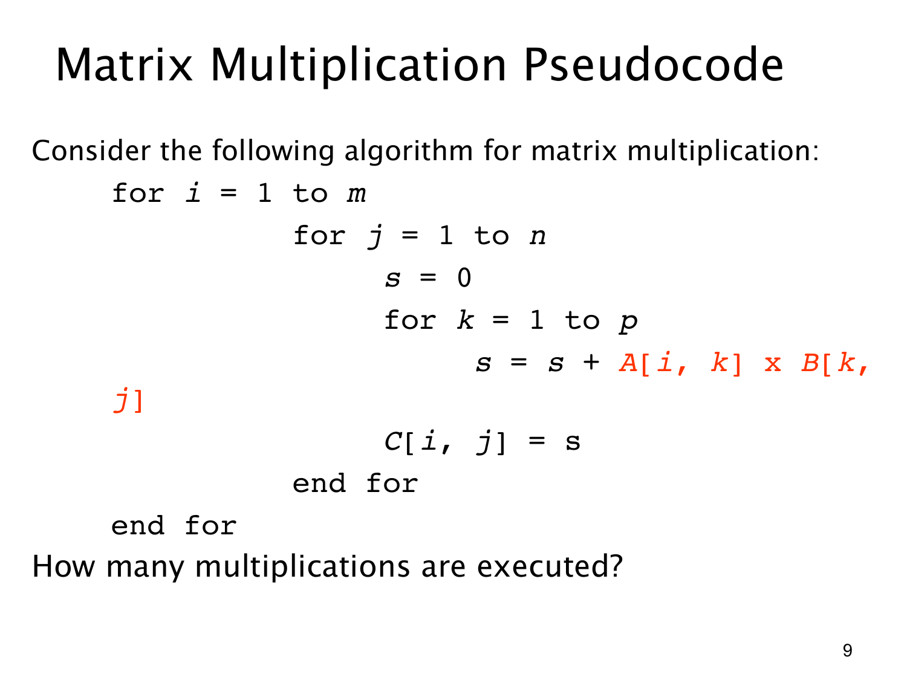

课件第 9 页讲解原文
查看这一页课件

数三层循环中的乘法次数
这段伪代码的核心操作是：
s = s + A[i, k] × B[k, j]
每执行一次这一行，就做一次标量乘法。要数总乘法次数，只需数这一行执行了多少次。
按本页写出的循环范围，i 从 1 到 m，j 从 1 到 n，k 从 1 到 p。所以可以把每次乘法用唯一的三元组 (i,j,k) 标记。
- 选择 i，有 m 种可能。
- 对每个 i，选择 j，有 n 种可能。
- 对每个 (i,j)，选择 k，有 p 种可能。
由乘法法则，执行次数为：
m×n×p=mnp.
变量 s 是累加器。对于每一对 (i,j)，先令 s=0，然后把所有 A[i,k]B[k,j] 加进去，最后令 C[i,j]=s。因此赋值 C[i,j]=s 应在最内层 k 循环完成之后执行。本页用缩进表达这一点，最内层的结束标记没有完整写出，可以读成：
for i = 1 to m
for j = 1 to n
s = 0
for k = 1 to p
s = s + A[i, k] × B[k, j]
end for
C[i, j] = s
end for
end for
还要留意课件的记号：上一页用 A:m×n、B:n×p；本页的循环则对应 A:m×p、B:p×n。也就是 n 和 p 的角色交换了。若要沿用上一页的矩阵维度，应让 j 跑到 p、k 跑到 n。两种记号下总次数都是 mnp，但写程序时维度必须一致。